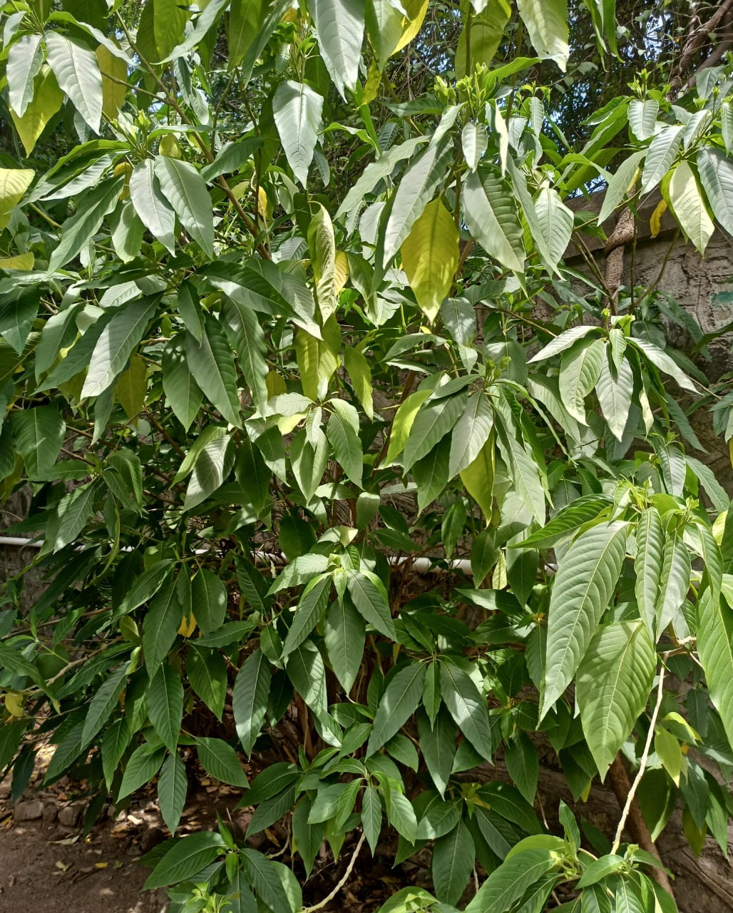

Botanical Name: Justicia adhatoda (L)
Common Name: Adulsa / Vasaka / Malabar Nut
Family: Acanthaceae
Adulsa is an evergreen shrub with green shrub with green leaves and white flowers. It is commonly found in India and is traditionally valued for its medicinal properties.